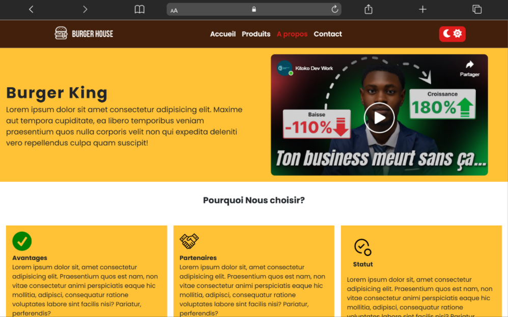
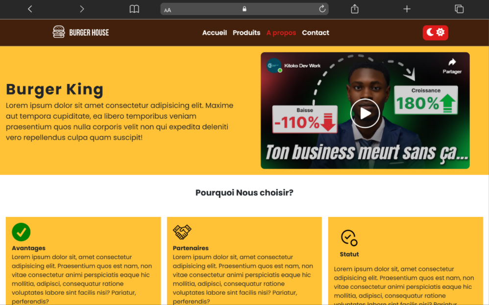

Nous sommes en 2025 et vous n'avez toujours pas de site web?
Il est temps de passer à l’action. Dans un monde où la visibilité en ligne est essentielle, ne pas avoir de site web, c’est comme refuser d’exister aux yeux de vos clients. Que vous soyez entrepreneur, commerçant, artiste ou prestataire de services, votre présence digitale est votre vitrine, votre carte de visite, votre moteur de croissance.
Chez KitokoDevWork, nous transformons vos idées en sites web modernes, efficaces et adaptés à vos objectifs. Design sur mesure, navigation intuitive, référencement optimisé… tout est pensé pour convertir vos visiteurs en clients fidèles.
.png)
.png) 

Pourquoi Nous choisir?
Avantages
- Site professionnel sur mesure Une vitrine moderne qui valorise votre activité, vos produits et votre image.
- Optimisation pour tous les appareils Votre site parfaitement lisible sur smartphone, tablette et ordinateur.
- Chargement rapide & performance garantie Des pages optimisées pour offrir une meilleure expérience à vos clients.
- Référencement naturel (SEO) Une visibilité accrue sur Google pour attirer de nouveaux clients.
-
Autre
Partenaires
Chez KitokoDevWork, nous croyons au pouvoir des collaborations gagnantes. Nos partenaires nous accompagnent dans notre mission : aider les entrepreneurs à réussir leur transformation digitale en République Démocratique du Congo et au-delà.
Ensemble, nous mettons en commun nos expertises pour offrir aux entreprises des solutions complètes : création de sites web performants, accompagnement digital, services marketing et innovations technologiques accessibles à tous.
Nous sommes fiers de travailler avec des acteurs ambitieux et visionnaires qui partagent nos valeurs : innovation, fiabilité et impact positif sur l'économie locale.
Statut
Statut de l’entreprise
KitokoDevWork est une jeune entreprise innovante spécialisée dans la création de sites web et l’accompagnement digital des TPE et PME en République Démocratique du Congo.
Actuellement, nous exerçons sous le statut d’auto-entrepreneur / entreprise individuelle, ce qui nous permet d’être :
— plus flexible,
— plus réactif,
— plus proche de nos clients et de leurs besoins réels.
Notre objectif est de devenir une agence digitale officiellement enregistrée, avec une équipe complète et des services encore plus avancés pour soutenir la digitalisation des entreprises congolaises.
L’aventure ne fait que commencer, et nous sommes déterminés à grandir avec nos clients !
Maria
Kinshasa

Marie
Lubumbashi
Professionnels, rapides et à l’écoute. Ils ont parfaitement compris notre identité et l’ont transformée en un site moderne. — Patrick M., Café Chez Pat

Chantâle
Kinshsa
Grâce à mon nouveau site, j’ai pu ajouter la commande en ligne et augmenter mes ventes de 40%. Je recommande les yeux fermés. — Chantal K., Food Corner Gombe

Josiane
Kinshasa
Je pensais qu’un site web coûtait trop cher. KitokoDevWork m’a prouvé le contraire, avec un résultat au-delà de mes attentes. — Josiane D., Fresh Juice Kin

Sarah
Paris
Ils m’ont vraiment accompagné du début à la fin. Support rapide, communication claire, rien à dire ! — Sarah N., Beauty by Sarah

Jeff
Kinshasa
Mon site est maintenant ma meilleure carte de visite. Les clients me contactent directement via WhatsApp, c’est top. — Chef Jeff, Grill Royal

Delphine
Kinshasa
KitokoDevWork m’a aidé à digitaliser mon business pendant que d’autres hésitaient encore. Très bon investissement. — Delphin M., MecaTech Services

Esthenab
CANADA
J’avais déjà un site mais il n’était pas performant. Après la refonte, mon trafic a explosé. Merci pour la qualité du travail ! — Esthenab T., King Burger RDC